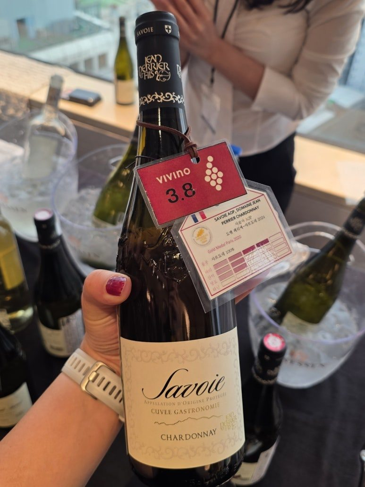
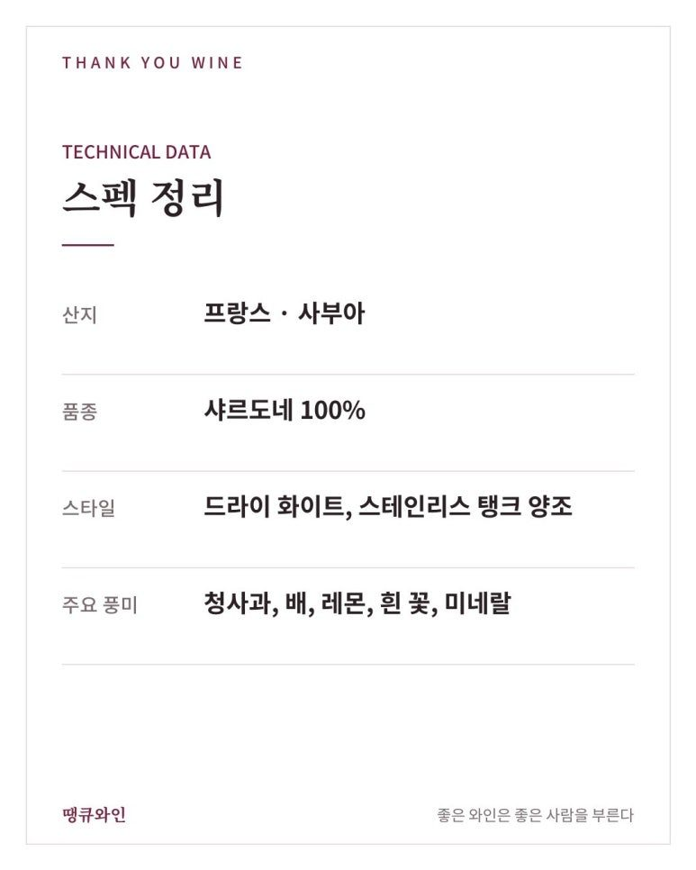
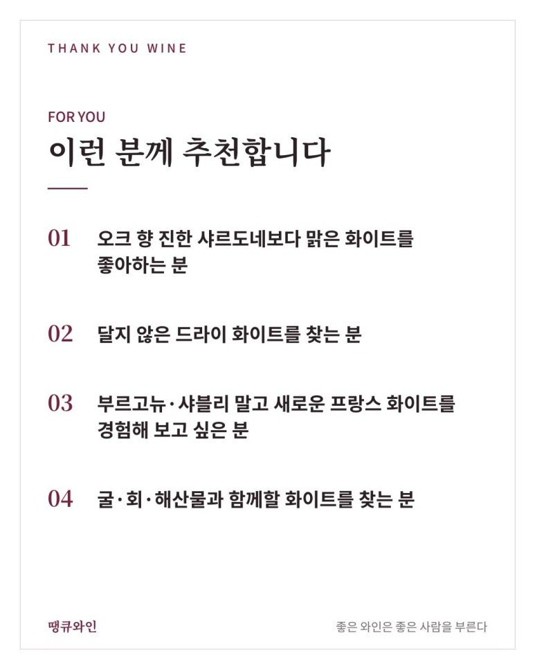
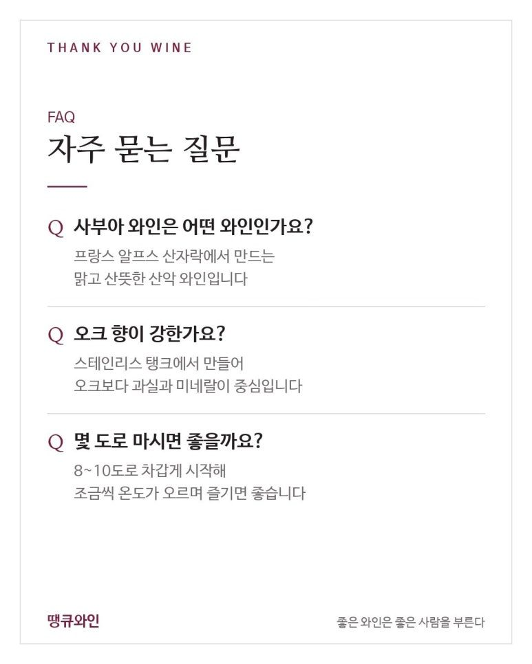

장 페리에 사부아 샤르도네 2024
알프스 산자락에서 온 맑고 달지 않은 화이트
장 페리에 사부아 샤르도네 2024는 1853년부터 7대째 알프스 산비탈을 손으로 일궈 온 가족의 맑은 산악 샤르도네예요.
샤르도네 하면 보통 두 가지 이미지가 떠오릅니다.
버터와 바닐라 향이 진한 묵직한 샤르도네, 아니면 날카롭게 산뜻한 샤블리.
그런데 지난 10월 19일 와인 수입사 10주년 그랜드 테이스팅에서, 그 어느 쪽과도 다른 샤르도네를 만났습니다.
시음 메모에 이렇게 적어 뒀어요.
달지 않음. 맛있다. 맑은데 뭔가 맛있다.
바로 프랑스 알프스, 사부아(Savoie)에서 온 장 페리에 사부아 샤르도네 2024입니다.
무엇보다 중요한 포인트는 바로,
1853년부터 7대째 알프스 산비탈을 손으로 일궈 온 가족의 맑은 산악 샤르도네라는 것.

한눈에 보는 장 페리에 사부아 샤르도네
- 생산자
- 장 페리에 에 피스(Jean Perrier et Fils)
- 산지
- 프랑스 · 사부아(Savoie AOP)
- 품종
- 샤르도네 100%
- 라인
- 퀴베 가스트로노미(Cuvée Gastronomie)
- 수상
- 파리 농업 콩쿠르 금상(2020), 비비노 3.8
- 이런 분께
- 오크 향 진한 샤르도네가 부담스러운 분, 맑은 화이트를 좋아하는 분
10주년 그랜드 테이스팅에서 직접 마셔 보니

▲ 10월 19일 와인 수입사 10주년 그랜드 테이스팅에서 직접 맛본 장 페리에 사부아 샤르도네 2024
첫 모금의 인상은 ‘맑다’였습니다.
그런데 맑기만 한 게 아니라, 청사과와 배, 레몬 같은 과실 향이 깨끗하게 이어지고 끝에 산뜻한 미네랄이 남아요.
달지 않은데 밋밋하지도 않은, 그래서 자꾸 다시 손이 가는 화이트였습니다.
오크 향이 강한 샤르도네가 부담스러웠던 분들께 특히 반가울 스타일이에요.
JEAN PERRIER SAVOIE CHARDONNAY 2024
- 산지: 프랑스 · 사부아
- 품종: 샤르도네 100%
- 스타일: 드라이 화이트, 스테인리스 탱크 양조
- 주요 풍미: 청사과, 배, 레몬, 흰 꽃, 미네랄

장 페리에 샤르도네와 어울리는 음식은?
맑고 산뜻한 화이트라 해산물과 가벼운 요리에 잘 맞습니다.
- 해산물: 굴, 조개 술찜, 대하 소금구이
- 회: 광어·도미 같은 흰살 생선회
- 생선: 버터에 구운 흰살생선
- 치즈 요리: 퐁듀, 라클렛 같은 알프스식 치즈 요리
- 한식: 생선전, 해물파전
곧 제철을 맞는 굴과 함께라면 꼭 한 번 추천드려요.
산지가 같은 알프스라 퐁듀나 라클렛과 맞춰 보는 것도 재미있습니다.
비슷하게 오크 없이 맑은 프랑스 샤르도네를 찾으신다면 이 글도 함께 참고해 보세요.
장 페리에 사부아 샤르도네, 이런 분께 추천합니다
- 오크 향 진한 샤르도네보다 맑은 화이트를 좋아하는 분
- 달지 않은 드라이 화이트를 찾는 분
- 부르고뉴·샤블리 말고 새로운 프랑스 화이트를 경험해 보고 싶은 분
- 굴·회·해산물과 함께할 화이트를 찾는 분


자주 묻는 질문
사부아 와인은 어떤 와인인가요?
프랑스 알프스 산자락에서 만드는 와인으로, 서늘한 기후 덕분에 맑고 산뜻하며 미네랄이 살아 있는 스타일이 많습니다.
오크 향이 강한가요?
스테인리스 탱크에서 양조해 오크 향보다 과실과 미네랄이 중심입니다.
몇 도로 마시면 좋을까요?
8~10도로 차갑게 시작해 잔에서 조금씩 온도가 오르며 향이 열리는 걸 즐겨 보세요.
결국 이 와인의 매력은 ‘맑음’입니다
장 페리에 사부아 샤르도네는 화려하게 꾸미지 않은, 산의 공기처럼 맑은 샤르도네입니다.
7대째 이어진 가족의 손, 알프스 산비탈의 서늘함이 그대로 담겨 있어요.
“맑은데 뭔가 맛있는” 화이트가 궁금하시다면, 이번 겨울 굴 한 접시와 함께 열어 보세요.
이 글은 땡큐와인 네이버 블로그에 먼저 올린 글이에요.